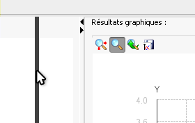

Astuces
Les 3 panneaux de l'affichage principale de Baldr sont redimensionnables.
Il suffit simplement de déplacer les barres de séparation avec la souris.

On peut aussi les masquer totalement en utilisant les petites flèches situées aux extrémités.